左＝本番サイト实拍（2026-08-27、iPhone 逻辑宽 390px、首次访问状态）；右＝高保真改造稿。改造稿同样带 cookie 同意条——「拒否／同意する」两个按钮都保留，但从盖住三分之一屏压成一行，不再压住内容与拇指区。右侧分数为 2026-07-26 实际打分；「今月の変動」上升列、Q&A 行序等个别处为示意。
现网首屏：标题＋模型说明＋引用段开头，一个职业名都看不到。改后：标题下一行即「1位は…」，名单立即开始、整行可点；说明与引用段折叠到名单后。
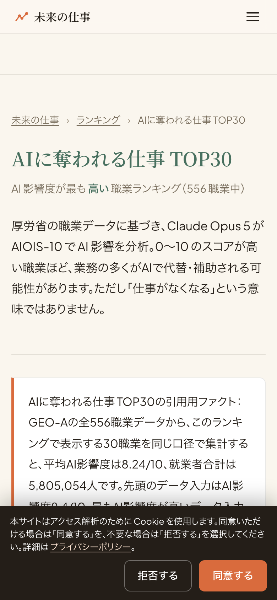
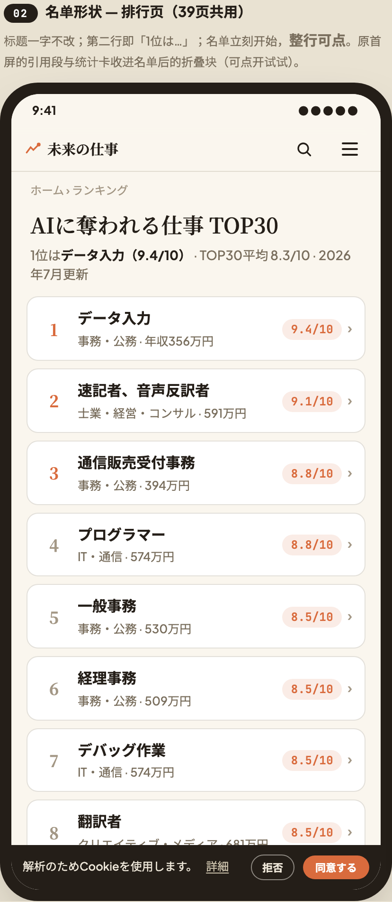
现网首屏：类型名「ふれあい創造家」＋三段类型散文，分数刚露头就被 cookie 横幅切断。改后：数字＋名次＋先月比＋一句人话＋年收/就业者＋门＋9問入口，一屏交齐；类型段移入折叠章「スコアの中身」。
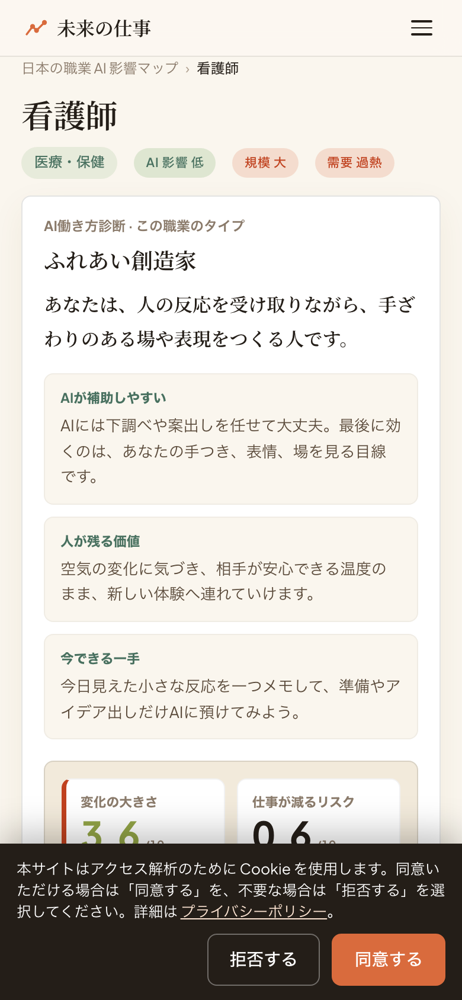
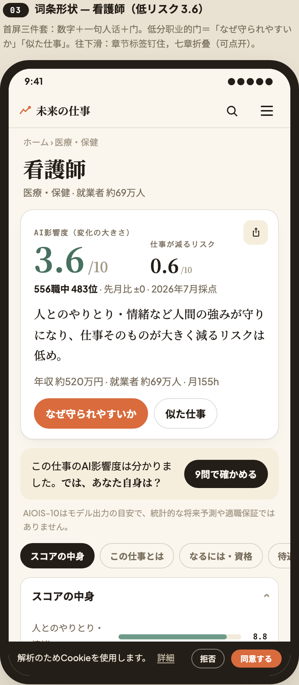
高分职业的门换成「AIで変わる作業を見る」＋「移り先の候補」——数字、意思、下一步永远同屏，不让人独自面对一个吓人的数字。这是现网没有的能力。
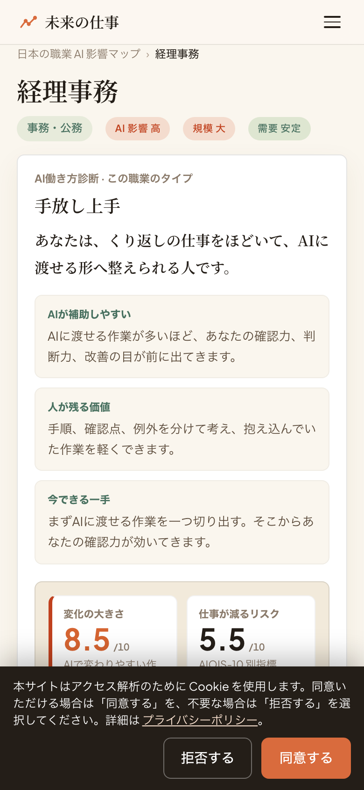
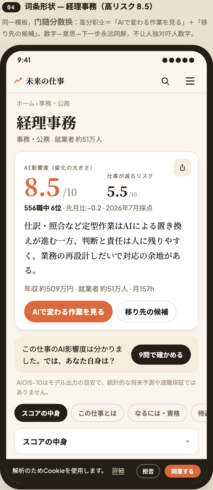
现网首屏：长导语＋引用段，看不到任何对比数据，且窄屏下两职业上下叠、「并排」消失，副题还有英文残留。改后：两名字＋两分数做成钉住的对比条，滚动不消失；下面立即是逐项对比行。
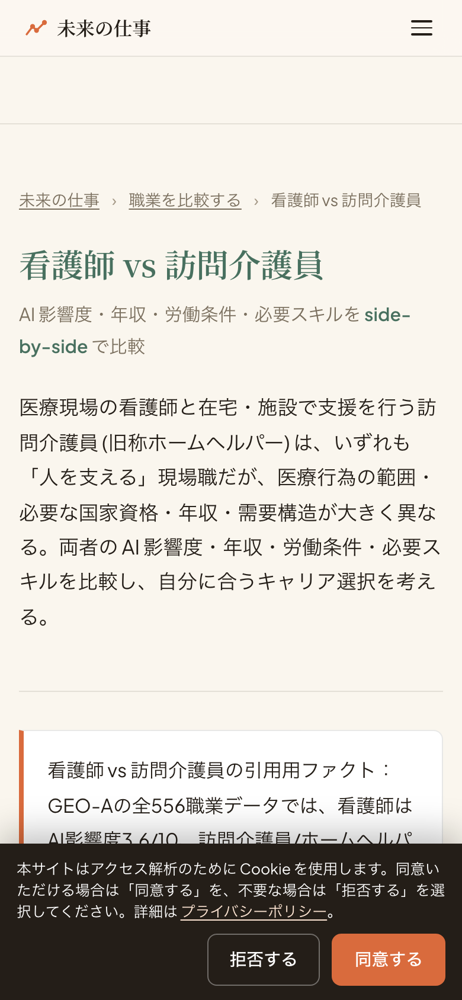
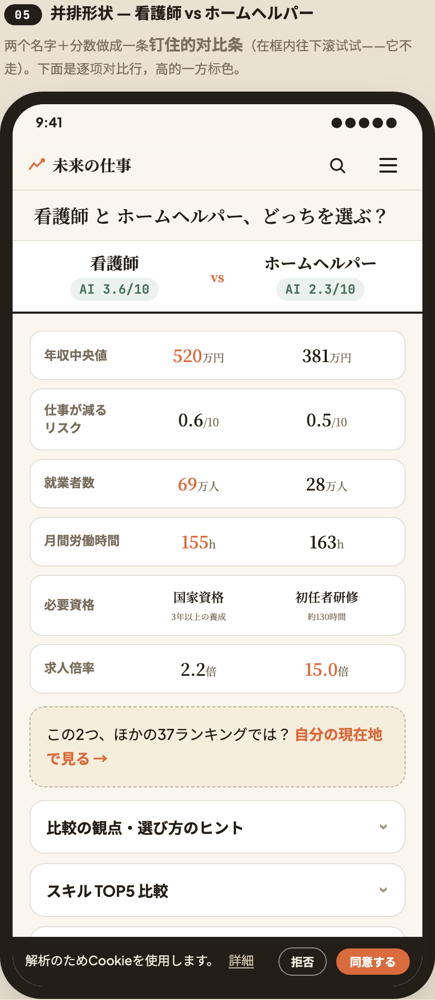
现网：搜索按钮误标「診断」，下接半屏诊断推广带。改后：按钮「調べる」＋示例词 → TOP10 横滑 → 今月の変動 → 四张门卡；诊断降为门之一。
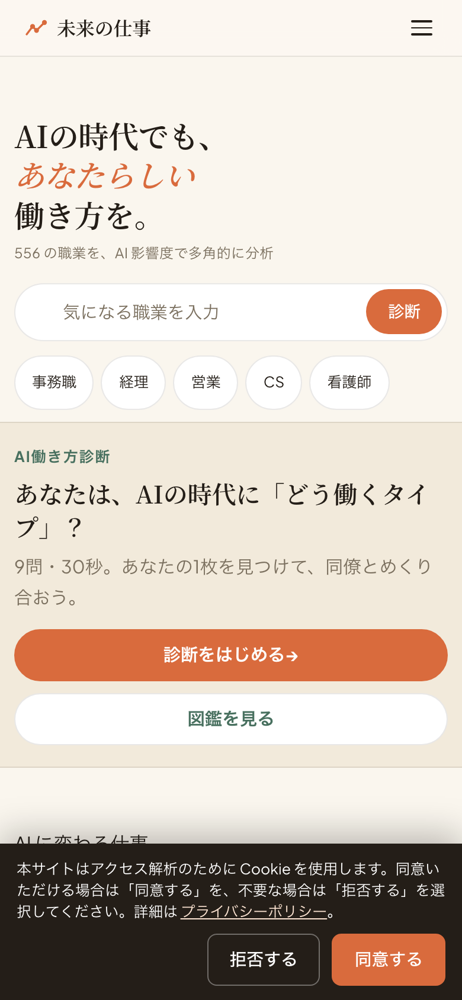
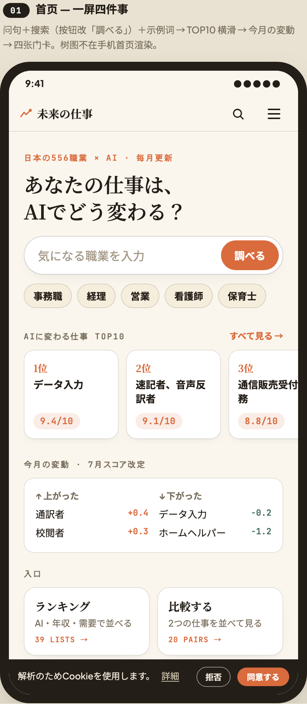
现网：占位文案被截断（「例: 看護師、エ…」），下面是一个复述说明的空虚线框。改后：占位完整；虚线框换成即点即出的示例词＋「选中后出什么」预告。选中后的画面、9問、结果流程不动。
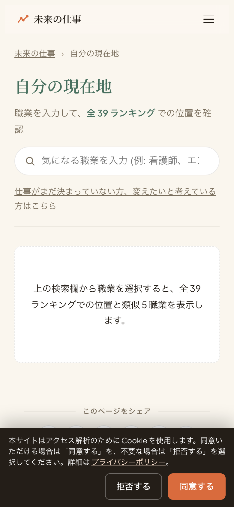
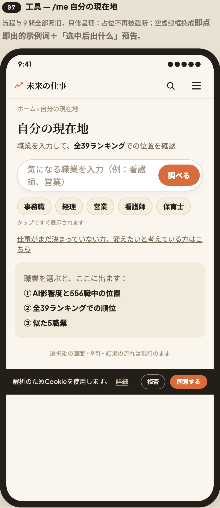
现网首屏：大标题＋导语＋「9問/3軸/556」说明卡，第 1 题在折线之下。改后：页头压缩、加进度条，第 1 题连同选项进入首屏——这一页的「答案」就是题目本身。
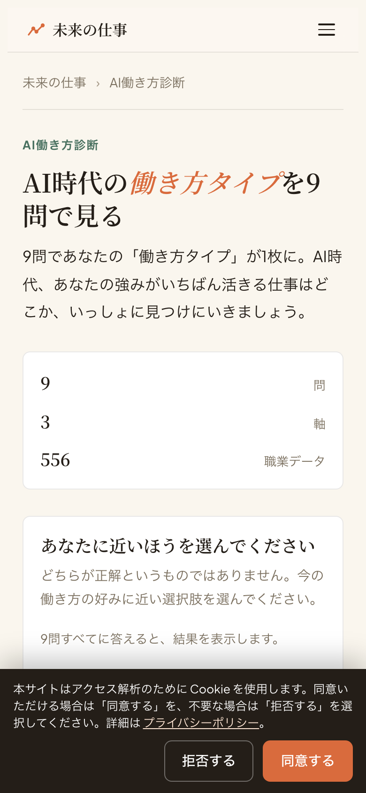
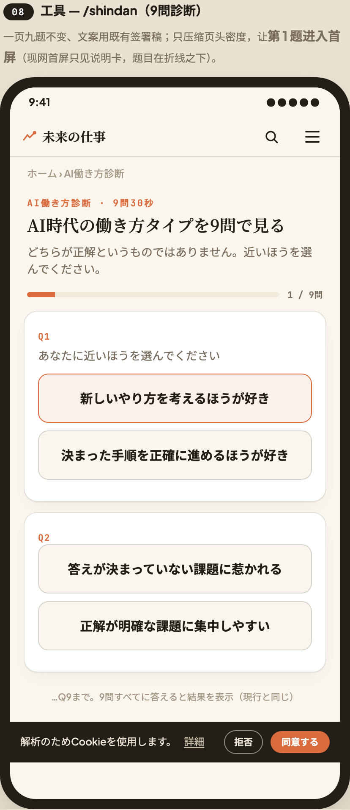
被搜的承诺是「回答」。现网首屏：引用段独占，人要从密集段落里自己刨答案。改后：先一句话作答（最高データ入力 9.4、10 職平均 8.7），紧接职业名单行即门，引用段折叠。
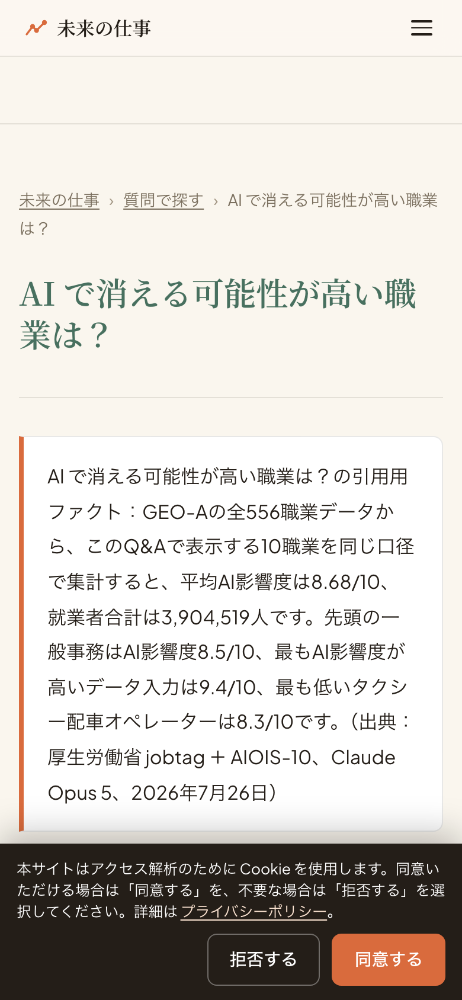
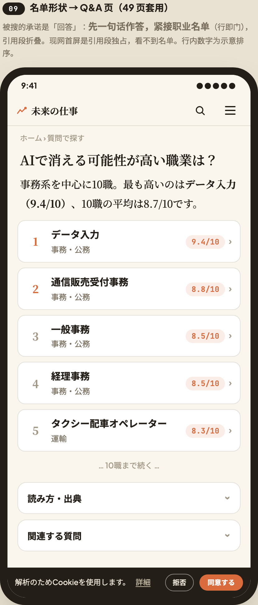
现网没有全局搜索：要查一个职业得回首页或开 28 项抽屉再进 /me。改后任何页面点顶栏🔍，两步到任何词条；假名未变换即命中；查不到给三扇门。这是整套改造里唯一「新造」的部件。
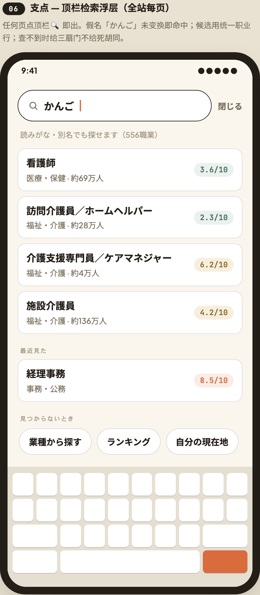
地图保留桌面身份，本轮手机端不动（数据：加载→点开一块的转化 4.6%，不作为手机主脊柱）。列在此处仅为完整性。
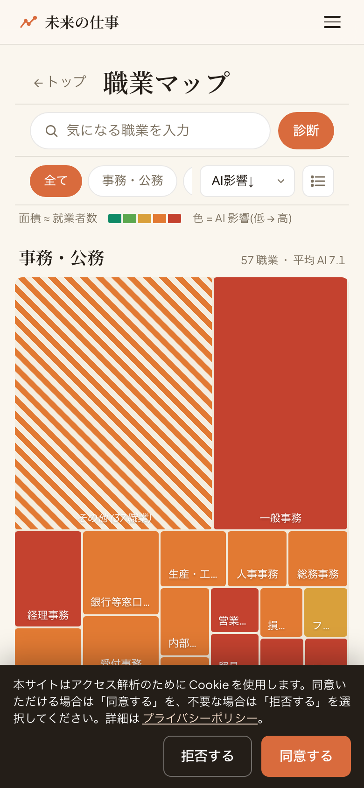